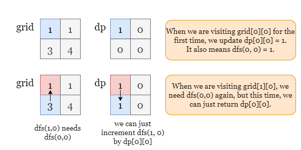

1 / 6
As shown in the picture below, we have found 8 valid paths. Note that:
Let's build an auxiliary array dp of the same size as grid to represent the number of paths
that end at each cell. Initially, the value of each dp[i][j] cell is 1, which stands for
the path made by grid[i][j] cell itself.
Then, for each cell grid[i][j], we need to look for its neighbor cells in 4 directions, if there exists
a neighbor cell (let's say grid[i + 1][j]) that is larger than grid[i][j], it means every
path that ends at grid[i][j] can be extended to grid[i + 1][j]. Therefore, the number of
paths ending at grid[i + 1][j] should be incremented by grid[i][j].
However, if we traverse all cells by arbitrary order, we might need many repeated updates, as described below.
It implies that we should iterate over all cells by value. If we sort these cells by value, then traverse over them
from the smallest. This ensures that the number of paths ending at each cell in dp is updated only
once.
Please refer to the following slide for an example.
dp, a 2-d array of the same size as grid, and set every value as
1.
grid[i][j], check its 4-direction neighbor cells, if a neighbor cell grid[curr_i][curr_j]
has a larger value, then increment dp[curr_i][curr_j] by dp[i][j].
dp when the iteration ends.
Java
class Solution {
public int countPaths(int[][] grid) {
int[][] directions = {{0, 1}, {0, -1}, {1, 0}, {-1, 0}};
int m = grid.length, n = grid[0].length;
int mod = 1_000_000_007;
// Initialize dp, 1 stands for the path made by a cell itself.
int[][] dp = new int[m][n];
Arrays.stream(dp).forEach(row -> Arrays.fill(row, 1));
// Sort all cells by value.
int[][] cellList = new int[m * n][2];
for (int i = 0; i < m; ++i) {
for (int j = 0; j < n; ++j) {
int index = i * n + j;
cellList[index][0] = i;
cellList[index][1] = j;
}
}
Arrays.sort(cellList, (a, b) -> grid[a[0]][a[1]] - grid[b[0]][b[1]]);
// Iterate over the sorted cells, for each cell grid[i][j]:
for (int[] cell : cellList) {
int i = cell[0], j = cell[1];
// Check its four neighbor cells, if a neighbor cell grid[currI][currJ] has a
// larger value, increment dp[currI][currJ] by dp[i][j]
for (int[] d : directions) {
int currI = i + d[0], currJ = j + d[1];
if (0 <= currI && currI < m && 0 <= currJ && currJ < n
&& grid[currI][currJ] > grid[i][j]) {
dp[currI][currJ] += dp[i][j];
dp[currI][currJ] %= mod;
}
}
}
// Sum over dp[i][j].
int answer = 0;
for (int i = 0; i < m; ++i) {
for (int j = 0; j < n; ++j) {
answer += dp[i][j];
answer %= mod;
}
}
return answer;
}
}
Python
class Solution:
def countPaths(self, grid: List[List[int]]) -> int:
m, n = len(grid), len(grid[0])
mod = 10 ** 9 + 7
directions = [[0, 1], [0, -1], [1, 0], [-1, 0]]
# Initialize dp, 1 stands for the path made by a cell itself.
dp = [[1] * n for _ in range(m)]
# Sort all cells by value.
cell_list = [[i, j] for i in range(m) for j in range(n)]
cell_list.sort(key = lambda x: grid[x[0]][x[1]])
# Iterate over the sorted cells, for each cell grid[i][j]:
for i, j in cell_list:
# Check its four neighbor cells, if a neighbor cell grid[curr_i][curr_j] has a
# larger value, increment dp[curr_i][curr_j] by dp[i][j]
for di, dj in directions:
curr_i, curr_j = i + di, j + dj
if 0 <= curr_i < m and 0 <= curr_j < n and grid[curr_i][curr_j] > grid[i][j]:
dp[curr_i][curr_j] += dp[i][j]
dp[curr_i][curr_j] %= mod
# Sum over dp[i][j].
return sum(sum(row) % mod for row in dp) % mod
Let m×nm \times n be the size of the input array grid.
Time complexity: O(m⋅n⋅log(m⋅n))O(m\cdot n \cdot\log(m\cdot n))
dp and the calculation of answer we iterate over all the
cells of the dp array, which also takes O(m⋅n)O(m \cdot n) time.
Space complexity: O(m⋅n)O(m\cdot n)
cellList and dp, they both contain O(m⋅n)O(m \cdot n) elements.
In the previous approach, we have to sort all cells first to avoid repeated computation. Here, we introduce a better method that doesn't need traversing by order.
We define a function dfs(i, j) to calculate the number of increasing paths ending at
grid[i][j]. dfs(i, j) consists of at most 5 parts:
grid[i][j] itself.dfs(i - 1, j), if grid[i - 1][j] exists and is smaller than grid[i][j].
dfs(i, j - 1), if grid[i][j - 1] exists and is smaller than grid[i][j].
dfs(i + 1, j), if grid[i + 1][j] exists and is smaller than grid[i][j].
dfs(i, j + 1), if grid[i][j + 1] exists and is smaller than grid[i][j].
If a neighbor cell with a smaller value (For example, grid[i + 1][j] < grid[i][j]) exists, we can get
the number of paths ending at this cell as dfs(i + 1, j), and for all those paths we can extend the
path with the current element, so we increment dfs(i, j) by dfs(i + 1, j).
Remember to use the memoization method to avoid repeated computation. Similarly, we create an array dp
of the same size as grid. Initially, each cell dp[i][j] is set to 0, which
means unvisited.
Once we get the number of paths ending at cell grid[i][j] and update dp[i][j], it means the
cell grid[i][j] is visited and the value of dfs(i, j) calculated for the
first time. If we need dfs(i, j) in the further iteration, we don't bother repeating the DFS process to
calculate dfs(i, j), but return dp[i][j] since dp[i][j] = dfs(i, j).
As shown in the picture below, suppose we have visited grid[0][0] and updated dp[0][0]. Now
we are visiting grid[1][0], grid[0][0] is smaller than grid[1][0], according
to the previous definition, we need a step dfs(1, 0) += dfs(0, 0). However, there is no need to
recalculate dfs(0, 0), we can just return dp[0][0] which will take constant time!

We can tell that each cell in dp[i][j] is only calculated by once.
dp, an auxiliary 2-d array of the same size as grid, and set every value as
0.
grid[i][j] and get dfs(i, j), the number of paths end at it:
dp[i][j] is non-zero, it means we have visited this cell, just return
dp[i][j] and repeat step 2.
dfs(i, j) = 1, the path consisting of the cell itself.(prev_i, prev_j) has a smaller
value, increment dfs(i, j) by dfs(prev_i, prev_j)dp[i][j] as dfs(i, j).dp.
Java
class Solution {
int[][] dp;
int[][] directions = {{0, 1}, {0, -1}, {1, 0}, {-1, 0}};
int mod = 1_000_000_007;
int dfs(int[][] grid, int i, int j) {
// If dp[i][j] is non-zero, it means we have got the value of dfs(i, j),
// so just return dp[i][j].
if (dp[i][j] != 0)
return dp[i][j];
// Otherwise, set answer = 1, the path made of grid[i][j] itself.
int answer = 1;
// Check its four neighbor cells, if a neighbor cell grid[prevI][prevJ] has a
// smaller value, we move to this cell and solve the subproblem: dfs(prevI, prevJ).
for (int[] d : directions) {
int prevI = i + d[0], prevJ = j + d[1];
if (0 <= prevI && prevI < grid.length && 0 <= prevJ &&
prevJ < grid[0].length && grid[prevI][prevJ] < grid[i][j]) {
answer += dfs(grid, prevI, prevJ);
answer %= mod;
}
}
// Update dp[i][j], so that we don't recalculate its value later.
dp[i][j] = answer;
return answer;
}
public int countPaths(int[][] grid) {
int m = grid.length, n = grid[0].length;
dp = new int[m][n];
// Iterate over all cells grid[i][j] and sum over dfs(i, j).
int answer = 0;
for (int i = 0; i < m; ++i) {
for (int j = 0; j < n; ++j) {
answer = (answer + dfs(grid, i, j)) % mod;
}
}
return answer;
}
}
Python
class Solution:
def countPaths(self, grid: List[List[int]]) -> int:
m, n = len(grid), len(grid[0])
mod = 10 ** 9 + 7
directions = [[0, 1], [0, -1], [1, 0], [-1, 0]]
dp = [[0] * n for _ in range(m)]
def dfs(i, j):
# If dp[i][j] is non-zero, it means we have got the value of dfs(i, j),
# so just return dp[i][j].
if dp[i][j]:
return dp[i][j]
# Otherwise, set answer = 1, the path made of grid[i][j] itself.
answer = 1
# Check its four neighbor cells, if a neighbor cell grid[prevI][prevJ] has a
# smaller value, we move to this cell and solve the subproblem: dfs(prevI, prevJ).
for di, dj in directions:
prev_i, prev_j = i + di, j + dj
if 0 <= prev_i < m and 0 <= prev_j < n and grid[prev_i][prev_j] < grid[i][j]:
answer += dfs(prev_i, prev_j) % mod
# Update dp[i][j], so that we don't recalculate its value later.
dp[i][j] = answer
return answer
# Iterate over all cells grid[i][j] and sum over dfs(i, j).
return sum(dfs(i, j) for i in range(m) for j in range(n)) % mod
Let m×nm \times n be the size of the input array grid.
Time complexity: O(m⋅n)O(m\cdot n)
dp as memory to avoid repeated computation, so each cell is only visited and
calculated once.
dp array also takes O(m⋅n)O(m \cdot n) time.
Space complexity: O(m⋅n)O(m\cdot n)
dp of the same size as grid.dfs
in the stack simulaneously, thus the stack takes O(m⋅n)O(m\cdot n) space.